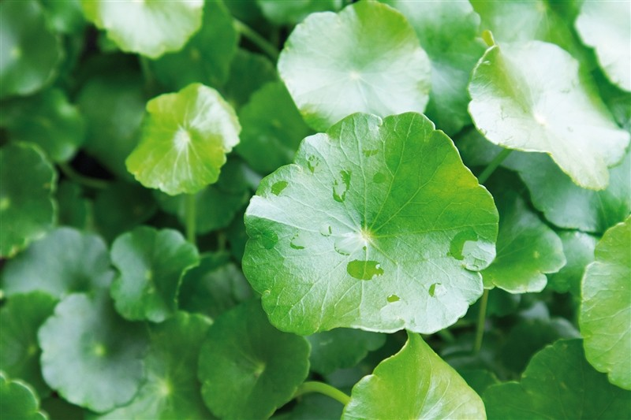

ใบบัวบก
ไม้ล้มลุก อยู่ในจำพวกผัก ประเภทเลื้อย มีลำต้นเลื้อยไปตามดินที่ชื้นแฉะ เรียกว่า ไหล มีรากงอกออกตามข้อของลำต้น
ใบ เป็นใบเดี่ยว ออกเรียงสลับ ใบงอกเป็นกระจุกออกจากข้อ ข้อละ 2-10 ใบ ลักษณะใบรูปไต รูปร่างกลม ฐานใบโค้งเว้าเข้าหากัน ขอบเป็นคลื่นหยักเล็กน้อย แผ่นใบสีเขียวมีขนเล็กน้อย ก้านใบสีเขียวยาว
ดอก ออกดอกเป็นช่อแบบช่อซี่ร่มตามซอกใบ มีประมาณ 2-5 ช่อ ช่อหนึ่งมีดอกย่อยประมาณ 4 – 5 ดอก ดอกมีขนาดเล็ก กลีบดอกมี 5 กลีบ สีม่วงเข้มอมแดงสลับกัน ก้านช่อดอกจะมีความยาวประมาณ 0.5-5 ซม. ริ้วประดับจะมีประมาณ 2-3 ใบ เกสรตัวผู้นั้นจะสั้น
ผล เป็นผลแห้งแตก ลักษณะแบน มีเส้นผ่าศูนย์กลางยาวประมาณ 3-4 มม. เมล็ดสีดำ
ขุดหลุมปลูกตื้นๆ ระยะ 15 x 15 ซม. * ใช้สแลน 50% คลุมแปลง ซึ่งจะทำให้บัวบกอวบน้ำ เหมาะสำหรับขายเป็นผักสด แต่ต้องระวัง เพราะอาจเกิดปัญหาโคนเน่าได้ * ในกรณีปลูกเพื่อขายเป็นสมุนไพรแห้ง อาจปลูกกลางแจ้ง (ซึ่งต้นจะสั้นกว่าปลูกในร่ม) เพราะจะใช้เวลาอบแห้งสั้นกว่า และได้น้ำหนักดี
รดน้ำ – ไม่ชอบน้ำมาก จึงรดน้ำแค่ 3-4 วันครั้ง หรือเมื่อดินแห้ง เวลารดควรรดบริเวณดินรอบๆ เพื่อป้องกันไม่ให้เน่าด้วย
แสงแดด – ควรเลี้ยงพื้นที่ที่มีแดดรำไร เมื่อรากแข็งแรงดีแล้วก็สามารถนำออกมาโดนแดดได้ สำหรับนี้จะมีความพิเศษอย่างนึงคือเราสามารถคุมฟอร์มมันได้ หากต้องการให้มีก้านยาวก็ปลูกในที่ร่ม ถ้าอยากให้ก้านสั้นออกใบเยอะๆ ก็วางไว้ที่มีแสงแดดหน่อย
ปุ๋ย – เติมปุ๋ยออสโมโค้ทสูตร 13-13-13 ทุกๆ 3 เดือน
ใบ รสขมเย็น เป็นยาดับร้อน ลดอาการอักเสบบวม แก้ปวดท้อง แก้ดีซ่าน แก้บิด ใบสดต้มกับน้ำซาวข้าวดื่มแก้นิ่วในระบบทางเดินปัสสาวะ มีสาร Asiaticoside ทำยาทาแก้แผลโรคเรื้อน
ต้น เป็นยำบำรุงกำลัง บำรุงหัวใจ แก้อ่อนเพลีย เมื่อยล้า รักษาแผลไฟไหม้ น้ำร้อนลวก หรือมีการชอกช้ำจากการกระแทก แก้พิษงูกัด ปวดศีรษะข้างเดียว ขับปัสสาวะ แก้เจ็บคอ เป็นยาห้ามเลือด ส่าแผลสด แก้โรคผิวหนัง ลดความดัน แก้ช้ำใน
เมล็ด รสขมเย็น แก้บิด แก้ไข้ แก้ปวดศีรษะ
ทั้งต้น รสหอมเย็น บำรุงหัวใจ บำรุงกำลัง แก้ช้ำใน แก้อ่อนเพลีย ขับปัสสาวะ รักษาบาดแผล แก้ร้อนในกระหายน้ำ แก้โรคปวดศีรษะข้างเดียว (ไมเกรน) แก้โรคเรื้อน แก้กามโรค แก้ตับอักเสบ
จะนำใบบัวบก นำมาล้างให้สะอาด โดยเฉพาะตรงโคนราก จะมีขี้ดินและสิ่งสกปรกติดอยู่มาก ให้แช่น้ำพักไว้ แล้วนำมาล้างน้ำให้สะอาด ก้านใบต้องเด็ดออกมาล้างทีละก้าน ส่วนตรงรากล้างออกเบาๆมือ เราจะมีวิธีเก็บรักษาให้สดนานๆ คือให้ล้างน้ำให้สะอาดดี แล้วให้สะเด็ดน้ำออกให้หมด แล้วนำมาห่อด้วยกระดาษหรือผ้าขาวบาง แล้วเก็บในภาชนะที่ปิดสนิท